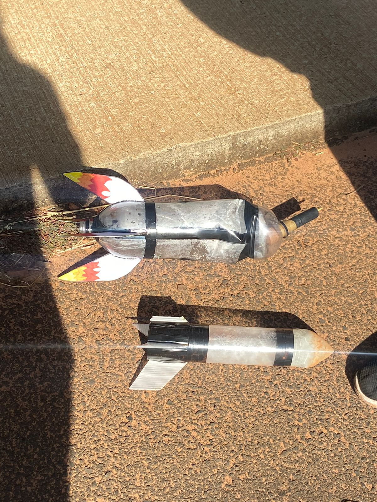
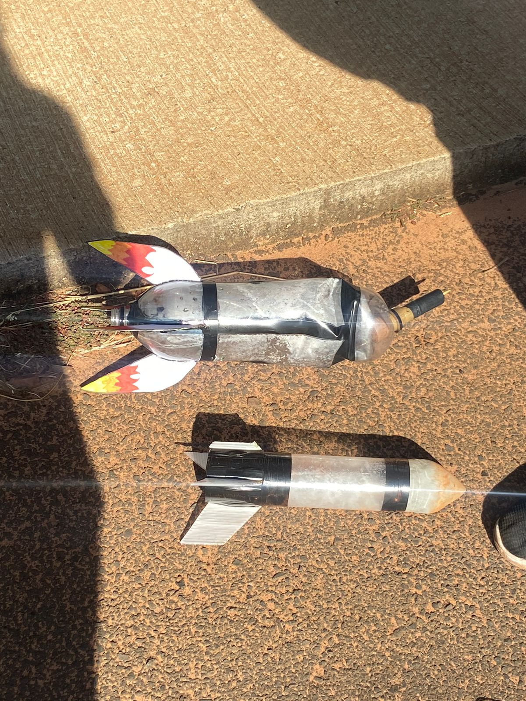

Meus projetos
ObaFog
Participei, junto com meu grupo, da Obafog, uma competição prática de lançamento de foguetes. Desenvolvemos e construímos foguetes de garrafa PET, aplicando conceitos de física, aerodinâmica e engenharia para alcançar a maior distância possível. Foi uma experiência que uniu teoria, prática e trabalho em equipe, além de fortalecer minha paixão pela área aeroespacial. .
A Física do Voo: Além de Bernoulli
Este projeto que foi desenvolvido em grupo, questiona a explicação tradicional da sustentação, baseada apenas no Princípio de Bernoulli. Por meio de um modelo de asa de isopor e experimentos práticos, demonstramos que essa abordagem é simplificada e não suficiente. Destacamos o papel fundamental do Efeito Coandă, que explica como o ar tende a se aderir à superfície curva da asa, sendo essencial para a geração da força de sustentação. Este trabalho foi apresentado na 24ª Mostra Científica e Tecnológica de Bauru, propondo uma reflexão sobre como esse tema é abordado nas aulas de física. .
AstroMetrics
Participei da eletiva Astrometrics, que une matemática, física e astronomia para entender os fenômenos do universo. Durante o curso, aprendemos conceitos como velocidade de escape e seu cálculo, exploramos temas como matéria escura, além de outros conteúdos fundamentais que são base para competições como a Olimpíada Brasileira de Astronomia e Astronáutica (OBA). Uma experiência que combinou raciocínio lógico, cálculos e curiosidade científica para decifrar os segredos do cosmos.
Olímpiada Brasileira de Foguetes
Desenvolvemos um foguete de garrafa PET com dois estágios.
Durante os primeiros testes, o sistema de desacoplamento entre os estágios não funcionou corretamente, impedindo a separação. Após ajustes, na terceira tentativa, o desacoplamento ocorreu como planejado, permitindo que o segundo estágio entrasse em ação e impulsionasse ainda mais o foguete. Alcançamos uma marca de 121 metros de distância, aplicando na prática conceitos de física, aerodinâmica e engenharia de foguetes.
 
